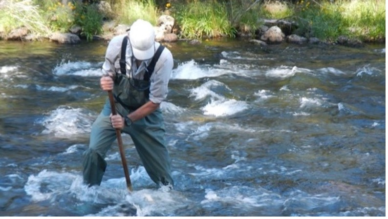
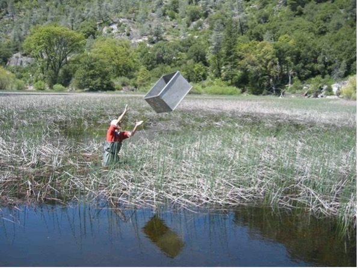
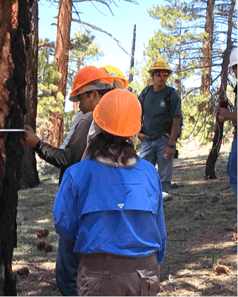
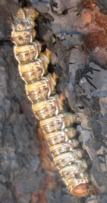
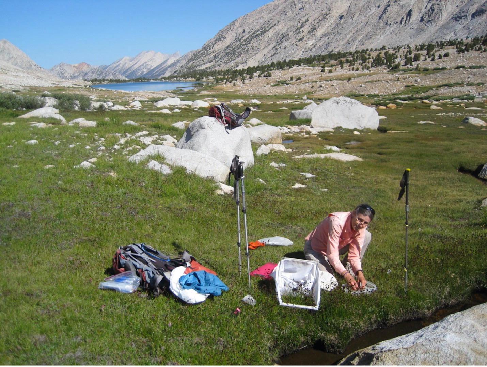

Role of dam discharge characteristics in structuring aquatic invertebrate assemblages along a montane river corridor
Collecting a kick net sample in the Tuolumne River and a throw trap toss in a river-flooded pond.


How does river regulation by dams affect downstream river benthos and associated wetlands? We have been sampling the Tuolumne River reach below the Hetch Hetchy reservoir as well as reference reaches above the reservoir and on the Merced River. The below-dam reach has more extensive algal growth and a less diverse invertebrate assemblage compared to reference reaches, but engineered flushing flows have proven to reduce these differences. We have also been tracking effects of these flushing flows on aquatic and terrestrial drift as well as effects on assemblage structure in wetlands and seasonal ponds.
Can eating caterpillars reduce wildfire damage in forests?
Interactions among the Nüümü People, pines, caterpillars, wildfires, and “defoliating moths”
Participants in the Tribal Youth program collect data on forest structure, and a piyuga descends a pine


The Nüümü People have traditionally harvested Pandora moth caterpillars (piyuga) as these larvae descend Jeffrey Pine trees in order to pupate in the ground. Fallen needles and branches are cleared away from the trees to be harvested, and a trench is created around each tree. Descending caterpillars are captured by the trenches and cooked as food. Our Tribal-US Forest Service-WMRC team hypothesized that the traditional clearing and digging of trenches around trees might reduce tree damage from wildfires. The team established new trench treatments and controls, and an ensuing wildfire showed that there was indeed less damage to trees that had been prepared for piyuga harvesting. We are pursuing experimental and observational investigation of a number of complex ecological interactions that are becoming apparent.
Direct and indirect ecosystem effects resulting from trout removal
Sequoia and Kings Canyon National Parks are trying to eliminate introduced brown trout in a few remote basins, because the trout prey upon, and compete with, endangered Mountain Yellow-Legged Frogs. We are assessing the effects of the removal efforts on the rest of the stream ecosystem, especially effects on stream insects and algae. We are sampling in and below the removal area, both before and after the Park Service removes the fish, thus establishing a Before-After-Control-Impact design.
Jutta Schmidt collects a sample in an alpine basin in the Sierra Nevada.
